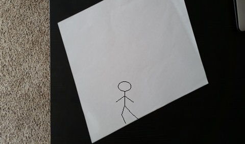
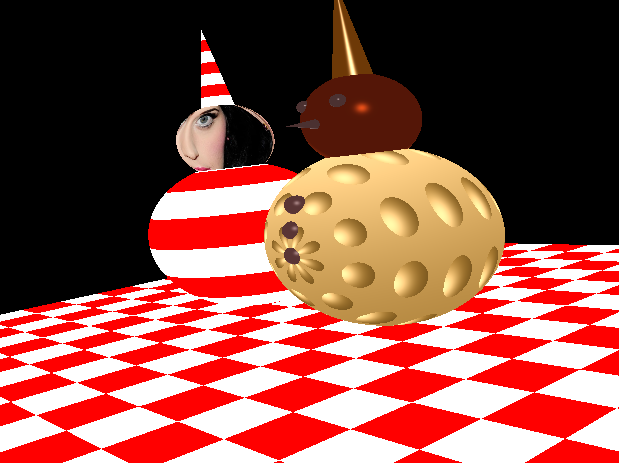
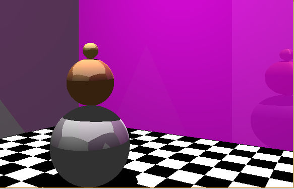
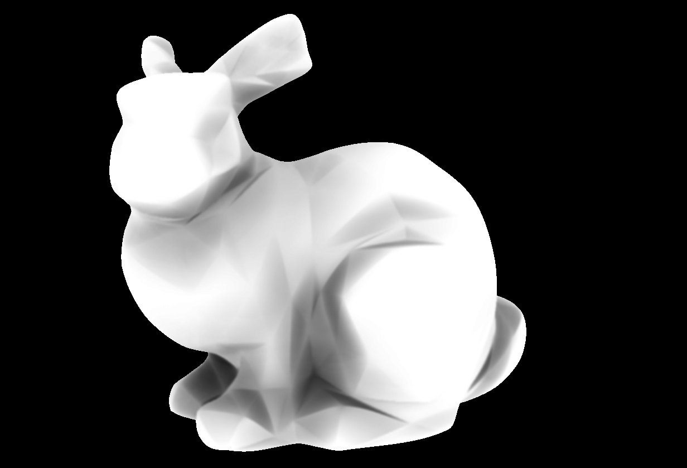
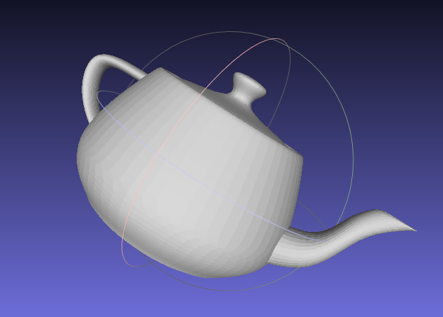
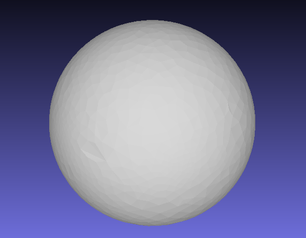

Implemented animated 2D StickMan which can do exercises, walk, climb up and down the hill on OpenGL. Video Link Github Link

3D SnowMan
Two 3D Snowmen implemented on OpenGL with texture mapping, bump mapping, Perlin noise mapping. Scene contains a interactive camera and basic shading. Video Link Github Link

Ray-tracing with CPU
Rendered ray-tracing with CPU to deliver shadow and reflection effects. Video Link Github Link

AO with Hardware Tessellation
Implemented real-time SSAO, HBAO and HBAO+ to provide image-based ambient occlusion effects on hardware tessellated objects. Video Link 1 Video Link 2 Github Link

Loop Subdivision C++
Implemented Loop Subdivision to smooth low-poly objects. Working well on objects with borders(teapot) and without (bunny). Github Link

Spherical Conformal Mapping
Implement spherical conformal paramerterization method to map a brain onto a sphere with Genus Zero Conformal Mapping algorithm. Github Link

PN-Triangles and Phong Tessellation
Implemented real-time GPU tessellation with Tessellation Shader on OpenGL 4.0. Used PN-Triangles and Phong Tessellation for smoothing. Video Link Github Link